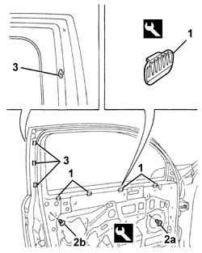

7205E36 Stripping FRONT SIDE DOOR
- Path
- Procedures > 72 PANELS AND FRAME > 7205 STRIPPING FOR REPLACEMENT OPERATIONS > 7205E exterior parts > 7205E36 Stripping FRONT SIDE DOOR
- Kind
- repair procedure (removal / refitting; the operation number is the code)
- Applies to
- all engines; all production periods
- Interactive page
- https://sloeber94.github.io/elrnDB-a147/en/#/3025948
Applies to: all engines; all production periods
 Removing
Removing
 Refitting
Refitting7005C44 interior handle panel - r r
7005M14 ELECTRIC WINDOWS, REAR VIEW MIRRORS and CENTRAL LOCKING SWITCH unit on driver's front door - R.R. (for driver's door)
7005M12 passenger side front door electrically operated window switch - r r (for passenger door)
7040E24 lower courtesy light indoor panel - r+r
7005E08 front side door interior panel r r
7005A04 front side door water guard protection - r r or replace with door panel removed
7005A28 front side door limiter- repair or replace
7005A46 front side door lower seal r r
7005C10 front door outer handle - r r with door panel removed
7005C52 interior opening handle - r r
7005D14 front side door descending window glass - r r with door panel (and mount frame) removed
7005D33 channel of door descending glass inner guide (one) lh or rh on front side door - r r
7005E12 corner cover of one front side door, lh or rh r r
7005R30 electrically controlled door mirror (one) - r+r
7005D26 front side descending window glass scraper (outer) r r
7005E50 front side door pillar trim (one) lh or rh - r r
7005D18 front side door descending window glass channel r r
7005D21 front door window front guide - r r
7005E91 One front door ANTI-BREAK IN PARTITION, left or right - R.R. with door panel removed
7005D24 front door window rear guide - r r
7005M20 front side door electric window system - r r with door panel/support frame removed
7005N20 front side door lock motor/catch assembly - rr with door panel and support frame removed
5505B10 front door wiring - r r
1. Prise out the descending glass protective rubber blocks using the appropriate tool.
 | Name | Country |
|---|---|---|
1 | Scraper blade | 1.823.015.000 |
1. Prise out the screw-in plugs (2a) and retaining plugs (2b) using the appropriate tool.
| Name | Country |
|---|---|---|
2 | Scraper blade | 1.823.015.000 |
3. Remove the worm screw plate.

Applies to: all engines; all production periods
Refitting
RemovingCheck that the parts to be refitted are undamaged.
Refit the new worm screw plates.
Fit the new retaining and screw-in plugs.
Fit the descending glass protective rubber plugs.
5505B10 front door wiring - r r
7005N20 front side door lock motor/catch assembly - rr with door panel and support frame removed
7005M20 front side door electric window system - r r with door panel/support frame removed
7005D24 front door window rear guide - r r
7005E91 One front door ANTI-BREAK IN PARTITION, left or right - R.R. with door panel removed
7005D21 front door window front guide - r r
7005D18 front side door descending window glass channel r r
7005E50 front side door pillar trim (one) lh or rh - r r
7005D26 front side descending window glass scraper (outer) r r
7005R30 electrically controlled door mirror (one) - r+r
7005E12 corner cover of one front side door, lh or rh r r
7005D33 channel of door descending glass inner guide (one) lh or rh on front side door - r r
7005D14 front side door descending window glass - r r with door panel (and mount frame) removed
7005C52 interior opening handle - r r
7005C10 front door outer handle - r r with door panel removed
7005A46 front side door lower seal r r
7005A28 front side door limiter- repair or replace
7005A04 front side door water guard protection - r r or replace with door panel removed
7005E08 front side door interior panel r r
7040E24 lower courtesy light indoor panel - r+r
7005M12 passenger side front door electrically operated window switch - r r (for passenger door)
7005M14 ELECTRIC WINDOWS, REAR VIEW MIRRORS and CENTRAL LOCKING SWITCH unit on driver's front door - R.R. (for driver's door)
Topics linked from this page (24)
- 5505B10 front door wiring - r r
- 5570T90 front speaker - r r
- 7005A04 front side door water guard protection - r r or replace with door panel removed
- 7005A28 front side door limiter- repair or replace
- 7005A46 front side door lower seal r r
- 7005C10 front door outer handle - r r with door panel removed
- 7005C44 interior handle panel - r r
- 7005C52 interior opening handle - r r
- 7005D14 front side door descending window glass - r r with door panel (and mount frame) removed
- 7005D18 front side door descending window glass channel r r
- 7005D21 front door window front guide - r r
- 7005D24 front door window rear guide - r r
- 7005D26 front side descending window glass scraper (outer) r r
- 7005D33 channel of door descending glass inner guide (one) lh or rh on front side door - r r
- 7005E08 front side door interior panel r r
- 7005E12 corner cover of one front side door, lh or rh r r
- 7005E50 front side door pillar trim (one) lh or rh - r r
- 7005E91 One front door ANTI-BREAK IN PARTITION, left or right - R.R. with door panel removed
- 7005M12 passenger side front door electrically operated window switch - r r
- 7005M14 ELECTRIC WINDOWS, REAR VIEW MIRRORS and CENTRAL LOCKING SWITCH unit on driver's front door - R.R.
- 7005M20 front side door electric window system - r r with door panel/support frame removed
- 7005N20 front side door lock motor/catch assembly - rr with door panel and support frame removed
- 7005R30 electrically controlled door mirror (one) - r+r
- 7040E24 lower courtesy light indoor panel - r+r